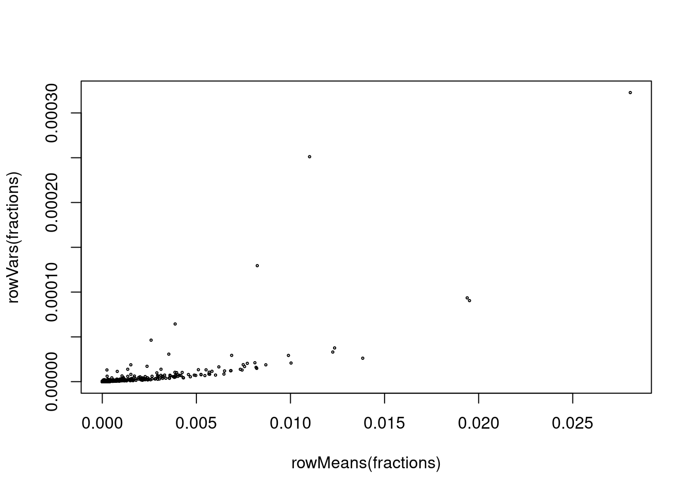
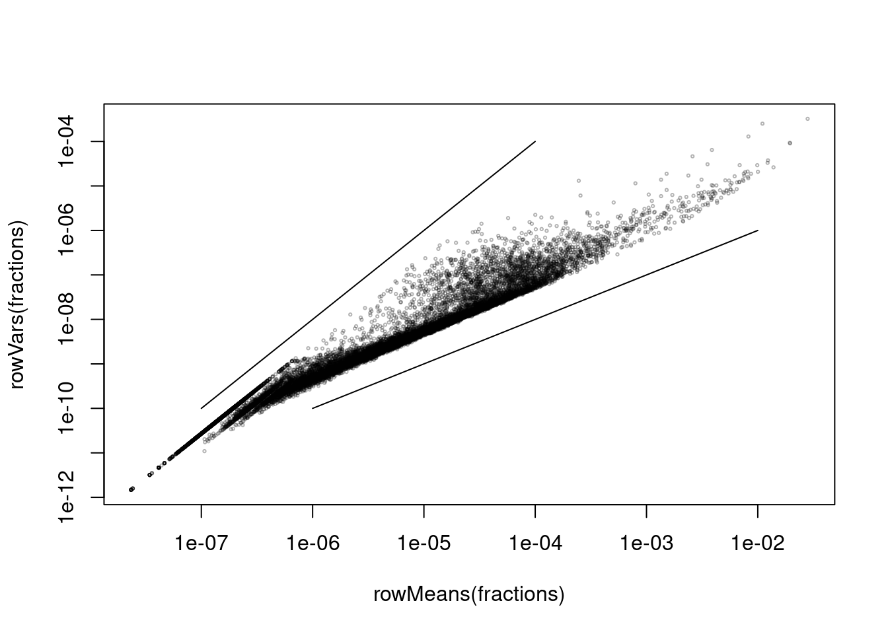
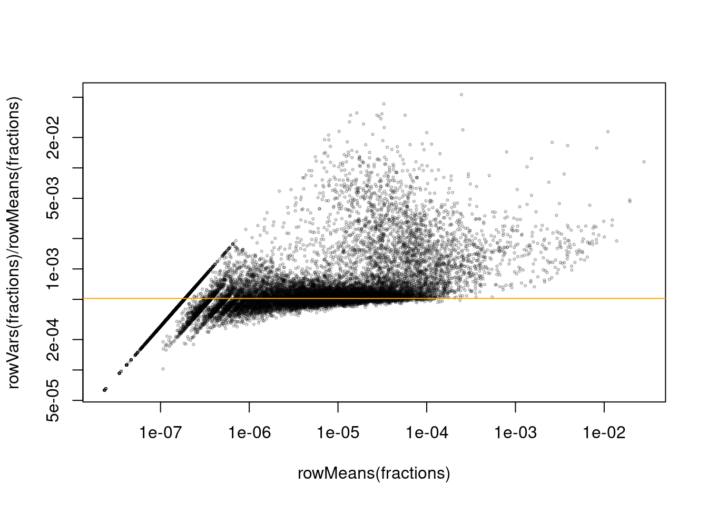
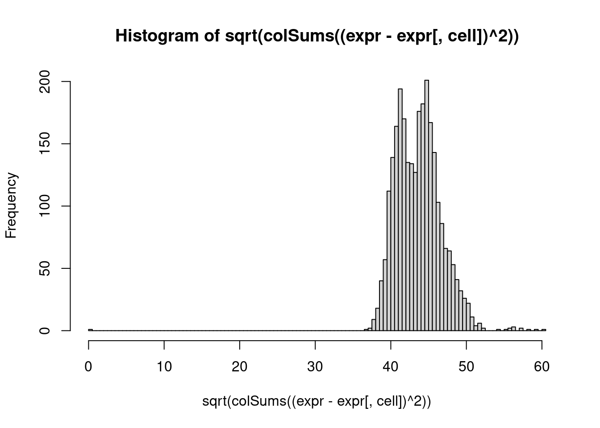
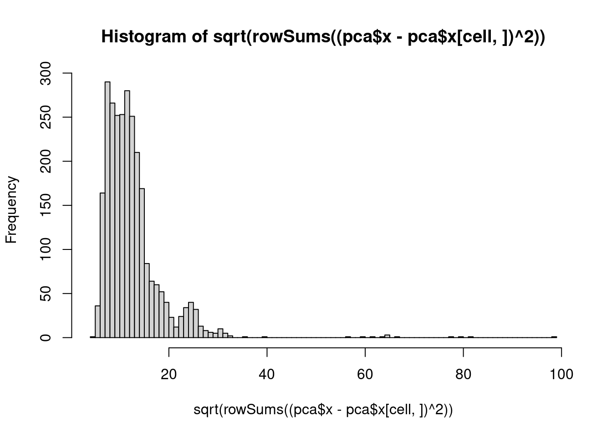

suppressPackageStartupMessages( {
library( Seurat )
library( Matrix ) } )Doing the Seurat analysis “on foot”
We load our example data
count_matrix <- Read10X( "data/pbmc3k/filtered_gene_bc_matrices/hg19/" )Qu: Examine the sparse storage format of the matrix.
Normalization
The total rad counts per cell (the column sums of the count matrix) differ noticeably.
In order to compare between cells, we should not look at the absolute counts but better at the fraction that each gene’s count contributes to the total. Hence, we divide the matrix by the column sum:
fractions <- t( t(count_matrix) / colSums(count_matrix) )Variance-mean dependence
We calculate for each gene mean and variance across all cells and plot them against each other:
library( sparseMatrixStats )Loading required package: MatrixGenericsLoading required package: matrixStats
Attaching package: 'MatrixGenerics'The following objects are masked from 'package:matrixStats':
colAlls, colAnyNAs, colAnys, colAvgsPerRowSet, colCollapse,
colCounts, colCummaxs, colCummins, colCumprods, colCumsums,
colDiffs, colIQRDiffs, colIQRs, colLogSumExps, colMadDiffs,
colMads, colMaxs, colMeans2, colMedians, colMins, colOrderStats,
colProds, colQuantiles, colRanges, colRanks, colSdDiffs, colSds,
colSums2, colTabulates, colVarDiffs, colVars, colWeightedMads,
colWeightedMeans, colWeightedMedians, colWeightedSds,
colWeightedVars, rowAlls, rowAnyNAs, rowAnys, rowAvgsPerColSet,
rowCollapse, rowCounts, rowCummaxs, rowCummins, rowCumprods,
rowCumsums, rowDiffs, rowIQRDiffs, rowIQRs, rowLogSumExps,
rowMadDiffs, rowMads, rowMaxs, rowMeans2, rowMedians, rowMins,
rowOrderStats, rowProds, rowQuantiles, rowRanges, rowRanks,
rowSdDiffs, rowSds, rowSums2, rowTabulates, rowVarDiffs, rowVars,
rowWeightedMads, rowWeightedMeans, rowWeightedMedians,
rowWeightedSds, rowWeightedVarsplot( rowMeans(fractions), rowVars(fractions), cex=.3 )
Qu: The function rowVars is here taken from the “sparseMatrixStats”. How would you calculate the row variances of a matrix given in one of the sparse storage formats?
It is helpful to make the plot logarithmic
plot( rowMeans(fractions), rowVars(fractions), cex=.3, log="xy", col=scales::alpha( "black", .3 ) )Warning in xy.coords(x, y, xlabel, ylabel, log): 16104 x values <= 0 omitted
from logarithmic plotWarning in xy.coords(x, y, xlabel, ylabel, log): 16104 y values <= 0 omitted
from logarithmic plotsegments( 1e-6, 1e-10, 1e-2, 1e-6 ) # line with slope 1 on log-log plot --> v ∝ µ
segments( 1e-7, 1e-10, 1e-4, 1e-4 ) # line with slope 2 on log-log plot --> v ∝ µ²
We have a look at the squared coefficient of variation (CV²):
plot( rowMeans(fractions), rowVars(fractions) / rowMeans(fractions),
cex=.3, log="xy", col=scales::alpha( "black", .3 ) )Warning in xy.coords(x, y, xlabel, ylabel, log): 16104 x values <= 0 omitted
from logarithmic plotabline( h = mean( 1/colSums(count_matrix)), col="orange")
For later use, we keep a list of the 1000 genes with the highest CV²:
hvg <- names( head( sort( rowVars(fractions) / rowMeans(fractions), decreasing=TRUE ), 1000 ) )We call these the “highly variable genes” (HVG).
Log-transformation
For the more strongly expressed (and hence more informative) genes, SD seems to be proportional to mean, i.e., we have multiplicative noise. TO make this homoskedastic, we should logarithmize our fractions.
However, \(\log(0)=-\infty\). As a “hack” to avoid this, let us as a small value to each faction before taking the log. Seurat used \(10^{-4}\).
So, if \(k_{ij}\) is the read count for gene \(i\) in cell \(j\) and \(s_j=\sum_i k_{ij}\) the total read count for cell \(j\), we might use \(\log_{10}\left(\frac{k_{ij}}{s_j}+10^{-4}\right)\). However, is seems convenient to use a transformation that maps 0 to 0. Therefore, Seurat (and many other work flows use):
\[ y_{ij} = \log_{10}\left(\frac{k_{ij}}{s_j}\cdot 10^4 + 1\right)\]
The ``+1’’ is often referred to as the “pseudocount”, because it is roughly one extra read count – if \(s_j\) is around \(10^4\).
expr <- log1p( fractions * 1e4 + 1 )Task: Compare with Seurat and check whether it uses natural or decadic logarithm.
Note: The function log1p preserves the matrix’s sparse storage format. Why does this not work with log( 1 + . )?
Distances
Let’s pick a random cell and check its distance to all other cells, using Euclidean distance on expr.
cell <- sample.int( ncol(expr), 1 )
hist( sqrt( colSums( ( expr - expr[,cell] )^2 ) ), 100 )
Remembering that the cells fall into three “clusters”, we might have hoped to get a bimodal distribution, with the cells from the chosen cell’s own cluster being closer and the other being farther. This is not the case, even if we try many cells.
PCA will save us, however.
PCA
We perform a principal component analysis (PCA) on the expr matrix. To save time, we - calculate only the top 20 PCs, and use a PCA function that can take advantage of this and of the fact that our matrix is sparse - use only the 1000 most variable genes (as seen above)
pca <- irlba::prcomp_irlba( t( expr[hvg,] ), n=20, center=TRUE, scale.=TRUE )
rownames(pca$rotation) <- hvg
rownames(pca$x) <- colnames(expr)Distances again
Now, let’s try again with the distances:
cell <- sample.int( ncol(pca$x), 1 )
hist( sqrt( rowSums( ( pca$x - pca$x[cell,] )^2 ) ), 100 )
Now, for at least some cells, we get a clearly bimodal distribution.
Neighbor graph
As we only have a small data set, we can calculate the full distance matrix:
dm <- as.matrix( dist( pca$x ) )Qu: Pick two cells, calculate the Euclidean distance of the their PCA scores “manually” and compare with the matrix entry. It should agree.
For a given cell, find its 20 nearest neighbors:
cell <- 134
order( dm[134,] )[1:20] [1] 134 878 933 237 590 1198 787 1873 1506 1306 1743 1024 965 1124 1713
[16] 1726 1084 610 515 2438Do so for all cells:
t(sapply( 1:ncol(expr), function(cell)
order( dm[134,] )[1:20] )) -> nnMake a graph out of this
library( igraph )
Attaching package: 'igraph'The following object is masked from 'package:Seurat':
componentsThe following objects are masked from 'package:stats':
decompose, spectrumThe following object is masked from 'package:base':
union# ...Apply a clustering algorithm onto it
…